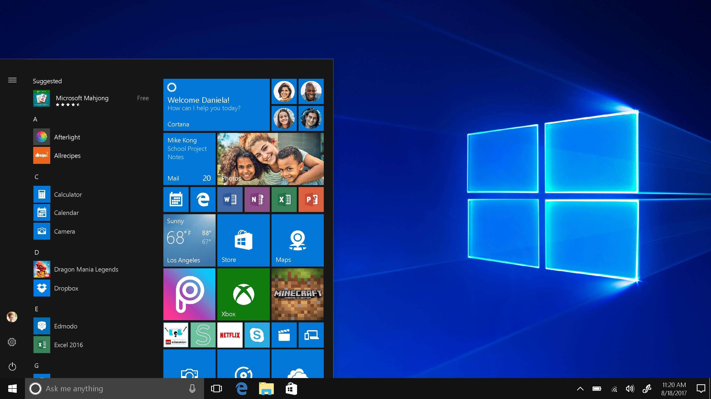
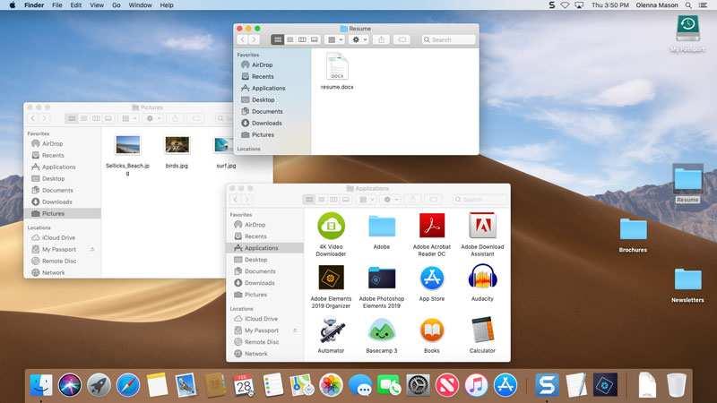
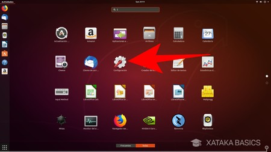

Sistemas operativos
Los 3 sistemas operativos mas utilizados
Windows
MacOs
Linux

Caracteristicas de los OS
Gestiona y coordina el hardware
Son necesarios para el funcionamiento de una PC
Ayuda a transmitir la informacion

Clasificacion de los Sistemas Operativos
Multitarea
Multiprocesador
Multiusuario
Monousa
